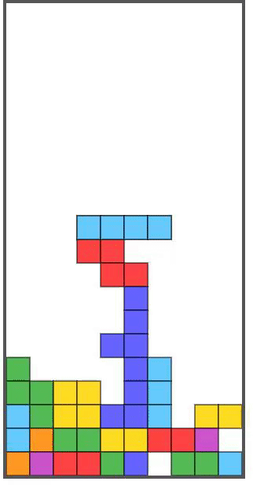

URL
https://github.com/emptywood/tetris.git
コーディングについて
テトリスでブロックの表示、衝突の判定、回転、固定、ラインで揃ったら消す動作、落ちる処理、キーが押されたときの処理を実装しました。
苦労した点
基本的にfor文とif文が入れ子になっている点。ラインが揃ったかチェックして消すとこで入れ子続きでわからなくなった点。
改善点
次のテトリスブロックの表示。スコアの計算と表示。リスタートができるようにする。

https://github.com/emptywood/tetris.git
テトリスでブロックの表示、衝突の判定、回転、固定、ラインで揃ったら消す動作、落ちる処理、キーが押されたときの処理を実装しました。
基本的にfor文とif文が入れ子になっている点。ラインが揃ったかチェックして消すとこで入れ子続きでわからなくなった点。
次のテトリスブロックの表示。スコアの計算と表示。リスタートができるようにする。